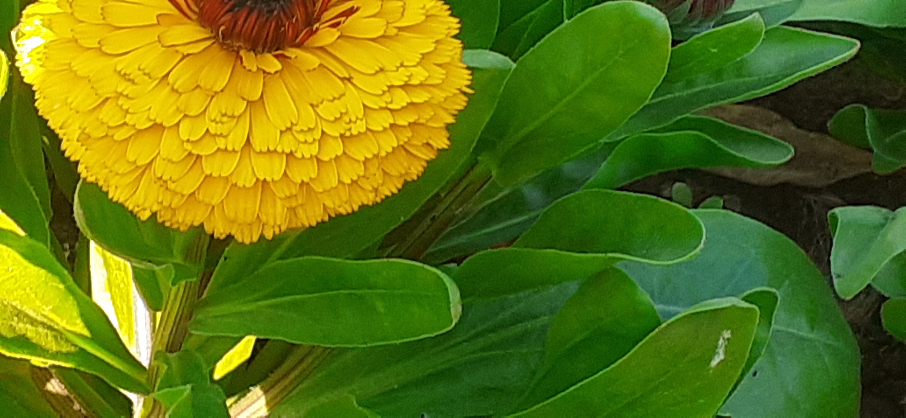

|

|
MARIGOLD!!!!
THIS PIC IS OF MARIGOLD.THIS PIC IS CLICKED BY MR.AARYAN SINGH.Marigolds are the ultimate deer-resistant plant,
with a strong fragrance to the foliage and flowers that repels most invasive, while the roots repel nematodes
They are annual plants, which means that they live for only one yearunder the soil.
The most popular varieties include the French and African marigolds.
Marigolds usually grow to a height of about 1 to 5 feet (0.3 to 1.5 meters).
Their flowers are usually red, orange, or yellow.
|